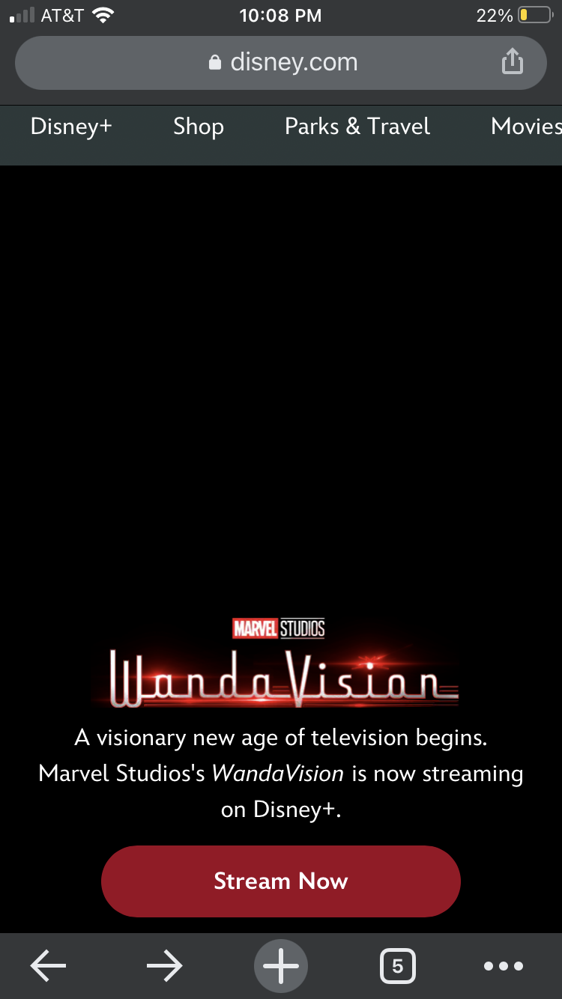
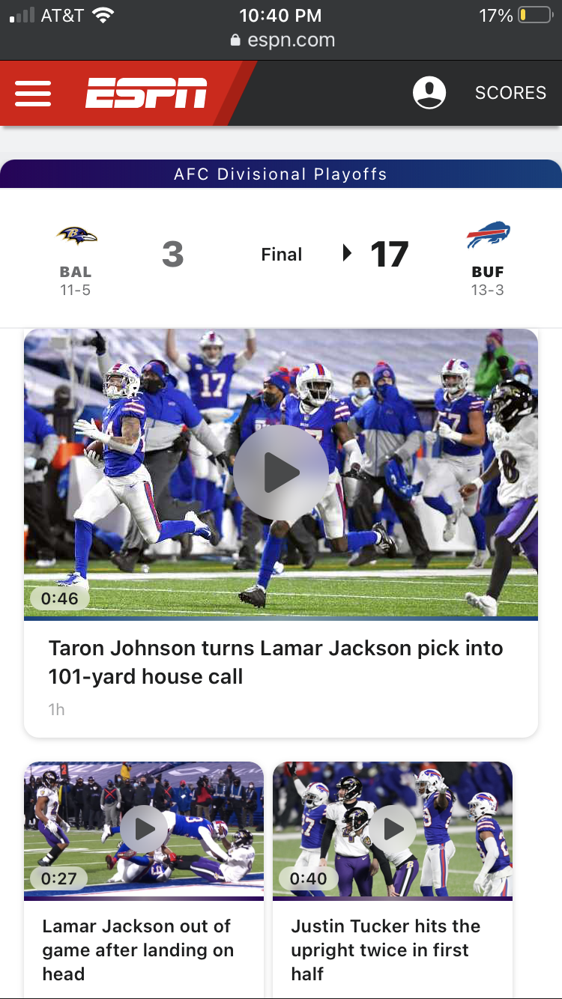

Fitt's Law-
CotopaxiWe can see a great representaion of Fitt's Law. We can see that this sale going on is important and they do a great job of a perfect target size. Our eyes are drawn and it is easy to see and click without it being too big in ruining the image behind.
Visual Hierarchy-
Disney The current show is first thing you see as you open the disney app. Eyes are immediately drawn there. They do a great job of colors and contrast. This is why Disney is as succeful as they are.
Law of Proximity-
ESPN ESPN organizes and spaces the boxes perfectly so you can see exactly what you need and want. They are spaced perfectly with themost important games going on with there scores above first followed by past games and news and keeps a very clean and organized website.